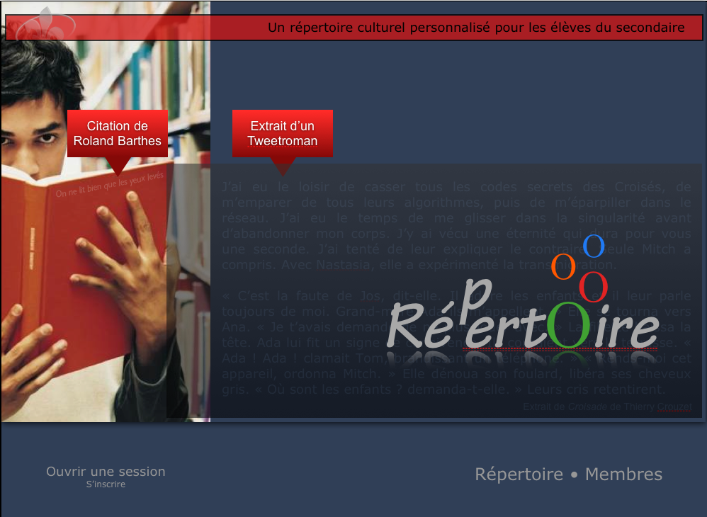

Croisade en filigrane
 Les Canadiens lancent un
service pour que les élèves du secondaire puissent se créer un
répertoire culturel personnalisé. Un extrait de La quatrième
théorie se retrouve en fond de la page d'accueil à côté
d’une citation de Barthes ! J’en profite pour mettre en ligne
la dernière version des cinq premiers chapitres du roman, suite aux
multiples corrections effectuées par Ayerdhal. En septembre, je
proposerai le manuscrit finalisé à quelques éditeurs papier.
Les Canadiens lancent un
service pour que les élèves du secondaire puissent se créer un
répertoire culturel personnalisé. Un extrait de La quatrième
théorie se retrouve en fond de la page d'accueil à côté
d’une citation de Barthes ! J’en profite pour mettre en ligne
la dernière version des cinq premiers chapitres du roman, suite aux
multiples corrections effectuées par Ayerdhal. En septembre, je
proposerai le manuscrit finalisé à quelques éditeurs papier.

Suite | 2010 | Sommaire | Texte publié vendredi 27 août 2010